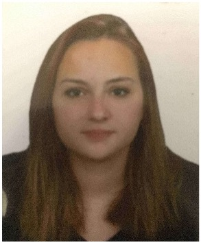

Tugba's CV

SUMMARY
I am eager to work, self-confident and open to learning.
My Contact
Education
- Private Sefakoy Nazmi Arikan Temel Fen Bilimleri Anatolian High School
69,95/100 09.2016-06.2017
- Istanbul University-Cerrahpasa
Faculty of Engineering-Department of Chemistry
2,82/4 09.2019-...
Language
- English ●●●○○
- Turkish ●●●●●
Skills
- Microsoft Office Suite ●●●○○
- Organizational Skills ●●●●●
Awards and Certifications
- 2020
Persuasion Techniques Training Istanbul Institute of Business Administration
- 2020
Fundamentals of Accurate and Effective Speaking Istanbul Institute of Business Administration
- 2021
Risk Based Thinking Technique Istanbul Business Institute
- 2022
Addiction Awareness Seminar Istanbul University-Cerrahpasa
Projects
- Graduation Thesis
Aerogels
Istanbul University-Cerrahpasa
- Graduation Thesis
Silica and Carbon Aerogels
Istanbul University-Cerrahpasa
My Hobbies